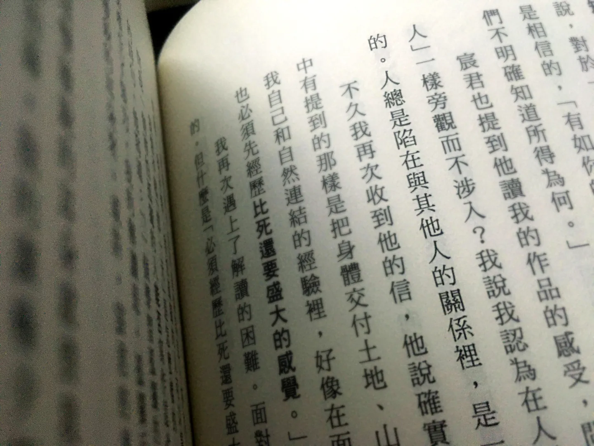

大学院で過ごした3年間
卒業してすぐ、大学院で過ごした日々のことを書きたいと思っていたのに、気づけば1年があっという間に過ぎていました。成績はビリすれすれで、大学院に行くなんて夢にも思っていなかった私が、行って、修了してしまうなんて。収穫でいっぱいのこの時間を過ごせたのは、本当に幸運でした。

なぜ大学院に進んだのか？
大学を卒業してから、インタラクティブ技術の会社で、プロジェクトの企画担当として働いていました（実際の仕事はプロジェクトマネージャーでしたが）。5か月目に壁にぶつかりました。部署にはリーダーがおらず、社長がクライアントに口からでまかせを言うのを見ていて、最後には期待された製品が作れず、責められることが予想でき（実際、すでにそうなっていました）、つらいのに、どうすることもできませんでした。
「仕事って、こんなふうに良心や道徳に反するものなの？」と揺れて悩んでいたちょうどそのとき、大学の先生から展示の手伝いの連絡があって、食事をしながら話すうちに、背中を押されて大学院を受験することになりました。12月下旬のことです。
慌ただしく、1月下旬に退職しました。お正月を過ごしながら出願書類を準備して、送ったあとは履歴書を準備して、2つのアルバイトで人生を体験するつもりでした。自分を養えることは必須でしたから。そして3月から、ある財団でアルバイトを始めて、そこから3年半の付き合いになり、私の大学院生活のすべてにまたがりました。
ここまで来ても、「なぜ大学院に進んだのか？」には、まだ答えていないようです。正直、受験は半分流されての衝動的な決断でした（「受験」という行為は、受験料を払うだけです）。当時、仕事で身動きが取れず、とにかく人生は前に進めなければとだけ思っていました。本当に退職するときも、同時に別の逃げ道を用意していました。アルバイトを見つけて、大学院に落ちたとしても、せめて自分を養えて、次の正社員の仕事を探せるように。もし本当に受かったら、それは選択肢のひとつにすぎない、と。
合格が決まったときには、当然のように進学することにしました。
でも、この大学院で学ぶ目的や、将来の仕事への助け（あるいは関連性）については、まだぼんやりしていました。学科そのものが新しく、芸術・人文、社会科学、マーケティング・経営など、多様な内容が含まれていたことが、質問から逃げる余地をくれました。「仕事から逃げるために大学院に行った」人ではない、と否定できそうにありません。
大学院で何を学んだのか？
フルタイムの学生にはなりたくなかったので、アルバイトをしながら大学院に通いました。
忙しくて、バランスが取れないこともよくありましたが、そんな状態に自分を置いたことを、後悔したことはありません。ひとつは、収入があって自分を養えたこと。もうひとつは、仕事の経験が学びの栄養になったこと。アルバイトも、前の正社員の仕事も、社会科学や経営学などの理論に向き合うとき、照らし合わせて考えるための材料になりました。それに加えて、背景も専門も人生経験も違う同級生や友人、同僚と、学びの疑問を話し合うことで、物事を見る角度と視野が広がりました。
たとえば、当時アルバイトをしていた財団は環境保全に関わるもので、授業でもそれをテーマにして文献を調べました。そこから、財団の理念と、社会との関係を別の面から知ることができました。将来、この分野に関わる機会があったら、組織の理念を実践する従業員として、自分の価値観をどこに置くべきか、なども考えました。
ところが、修士論文で質的研究を選んだときは、その価値に自信を持って「ある」とは言えませんでした。ただの独り言のような記録と推論ではないかと思い続けて、検討も分析も自分の判断の上に成り立っていることが不安でした。（これも、自分の劣等感の表れかもしれません）「私と他者との距離と関係」は、研究をしていた間の大きな問いになり、研究だけでなく、仕事や生活でも、自分の立ち位置を疑いました。私と研究、私と調査対象者、私と仕事、私と社会、私と社会問題、私と生活、私と友人。
（注：ただし、友人のSさんは、こうした「質的研究への戸惑い」は、その学科なら大学時代にとっくにぶつかるもので、私たちのような分野をまたぐ人や、分野横断の学科では、学校がもっと積極的に学生の「研究の基礎力」づくりを手伝うべきで、大学院がまるで2つ目の大学のようになってはいけない、と考えているそうです。これは、大学院の大学化という問題にも関わりそうなので、ここでは置いておきます。）
呉明益はこう言っています。「人間の世界では、『見るだけで関わらない』という役割は、とてもありえないと思う。人は、いつもほかの人との関係のなかに巻き込まれている。それは束縛であり、責任であり、同時にひとつの美しさでもある。」――《我想告訴你關於那座山的一切》序文
ちょうどその頃にこの一節を読んで、心の深いところを撃ち抜かれたように感じました。
大学院にいたあいだ、たくさんの時間を考えることに費やしました。絶えず反省して、立場を入れ替え、概念を借りて。そのとき、自分が解決したかった問題は、実は自分自身で、授業と研究は、自己探索の題材になっていました。「大学院の目的は、学術研究の人材を育てること」という見方で考えると、私にとって、明らかにそうではありませんでした。
後知恵：進むのか、進まないのか？
大学を卒業して、最初の仕事を経験した私は、自分への深い劣等感を抱えていました。「自分の専門能力は何なのか」を言えない焦りと、自分を肯定できるものが見つからない挫折感が、いつもつきまとっていました。でも幸い、アルバイトのなかで、少しずつ自信が育っていきました。これは私の幸運です。
けれど、アルバイトの経験の価値をこれほど肯定するなら、大学院に進む必要性は、ぐっと弱くなります。たしかに、アルバイトと大学院が重なった3年間で学んだことは、将来のキャリアをはっきりさせてはくれず、私は今も、専門能力は何か、どんな業界に進みたいのかを、言えないままです。
いま振り返ると、この大学院に行く必要はなかったと、本当に思います。でも、後悔はしていません。
授業での議論は、たくさんの新しい視点と視野をもたらしてくれました。志を同じくする友人ができて、対話のなかで考え方や心の成長も得られました。指導教官の辛抱強い指導と寄り添いは、たくさんのひらめきをともなっていました。
いまの私は、当時あれほど努力して悩み、問題の背後にある問題を積極的に探究していたことを、自信を持って肯定できます。同時に、その時期のすべての出会いにも、とても恵まれていたと思います。「行き詰まった」と感じるときはいつも、導きを得られました。
どう選んでもかまわないし、どの選択肢にも、正しい間違いはありません。もちろん、選ぶときは、どちらがより価値があるかを考えるものです。選べないときは、好きなもの、結果を引き受けられるものを選びます。そのなかで、得たい目標や、疑問の答えを一生懸命探していれば、どの選択も無駄にはなりません。無駄な選択なんてないのです。
3年が過ぎて、「私の専門能力は何ですか」にはまだ答えられません。でも、もう焦ってはいません。「専門能力」というものを、絵や、デザイン、プログラミングがどのくらいできるかとか、会計士、弁護士、医者のような職業のイメージにとどめず、自分の強みや、力を入れられるところ、頑張れるところが、見えるようになったからです。